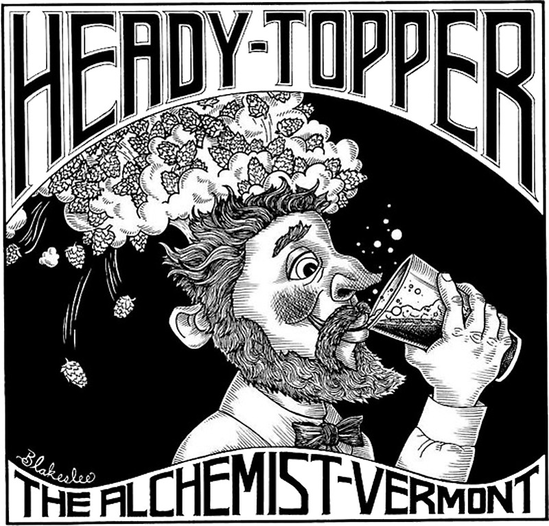

HOME
IPAs
Heady Topper IPA
The Alchemist Brewery
The Alchemist has been brewing Heady Topper since 2003. This Double IPA is not intended to be the strongest or most bitter DIPA. It is brewed to give you wave after wave of hop flavor without any astringent bitterness. The Alchemist brew Heady Topper with a proprietary blend of six hops – each imparting its own unique flavor and aroma. Take a big sip of Heady and see what hop flavors you can pick out. Orange? Tropical Fruit? Pink Grapefruit? Pine? Spice? There is just enough malt to give this beer some backbone, but not enough to take the hops away from the center stage.
The Alchemist is a family run brewery specializing in fresh, unfiltered IPA. John and Jen Kimmich originally opened The Alchemist as a 60 seat brew pub in the village of Waterbury in 2003. After eight years of success and growing popularity, they decided to open a small production brewery. Today The Alchemist currently operates two breweries in Vermont and distributes Heady Topper and Focal Banger throughout the state.
Check out their site HERE 